Санкт-Петербургский государственный университет
телекоммуникаций им. проф. М. А. Бонч-Бруевича
Академия
стартапов

Санкт-Петербургский государственный университет
телекоммуникаций им. проф. М. А. Бонч-Бруевича
Проректор по проектной деятельности
Начальник управления маркетинга и рекламы
Начальник отдела сопровождения проектов цифровой трансформации
Координатор проекта и руководитель образовательной программы
Разработка и реализация образовательной программы «Академия стартапов СПбГУТ»
Выведение на рынок образовательных услуг программы «Академия стартапов СПбГУТ»
Разработка и выведение на рынок бизнес-образования программы ДПО «Академия стартапов СПбГУТ»
Обучение строится на основе командной работы студентов и преподавателей - практиков в сфере бизнеса и менеджмента. К участию в программе приглашаются эксперты в сферах деятельности, непосредственно связанных с профилем деятельности СПбГУТ.
Программа реализуется на основе сетевого взаимодействия структурных подразделений СПбГУТ, непосредственно связанных с профильными компетенциями, технической поддержкой образовательного процесса.
Общее руководство программой осуществляется проектным офис СПбГУТ.
В процессе работы с проектами студенты и преподаватели программы используют электронные ресурсы СПбГУТ и, в том числе, информационную системы управления проектами(ИСУП).
выпускные, квалификационные работы, диссертации, технологические стартапы